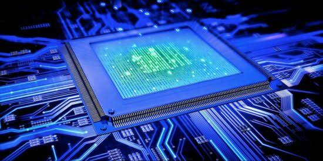
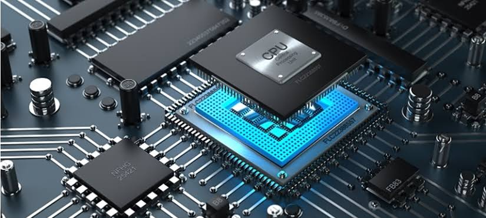

Central Processing Unit (CPU)
The CPU controls the computer process and communicates with the other components
of a personal computer. A Computer's CPU may be one of the most complicated parts of the computer
because of its intricacies. This unit manipulates the data as required by the user to present a morerefined form of data
called information. It transforms data in accordance to user instruction.


Go To